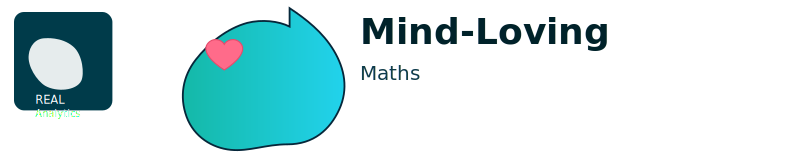

Mind‑Loving Maths
Gentle practice for sets & probability — small steps, steady confidence.
Questions: —
Preview Session
Choose a Level
Level 1 — Sets basics (∈, subsets, #A)
Level 2 — Venn & counts (A∪B, A∩B, only)
Level 3 — Probability (bags & outcomes)
Level 4 — Challenge mix (strategy)
Goal: Master a level by answering 5 in a row. A session is tuned for ~30–40 minutes.
Mastery Progress
Level mastery:
0/5
Type repetitions:
3
If you wobble, that’s data — try a new strategy.
Attempts remaining:
3
Press Preview Session to start a short, guided run.
Quick reflect:
🔍 Clue
Check
Submit & Next
Next ▶
Skip
Coach tips:
Name what you know → act on one step → check → adjust. Using a clue is smart learning.
Spin to claim reward
Close
Device‑time rewards vary 0–5 min. Caps apply for healthy balance.